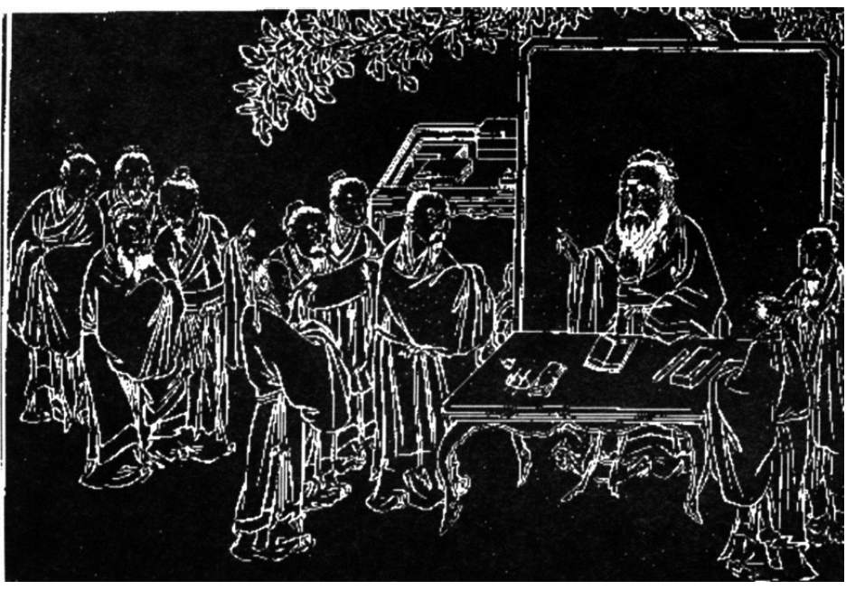

中国文明之所以能绵延久远，一个原因在于地理方面：它与人类其他伟大文明相隔绝的程度举世无双。地中海将美索不达米亚、埃及、希腊和罗马连接在一起，印度洋使印度能与中东、非洲和东南亚相互影响。相反，中国在其有史以来的大部分时间里，四面一直被山脉、沙漠和辽阔的太平洋所隔断。这种与世隔绝的意义在于，它使中国人能在较中东或印度诸民族更少面临外来入侵的情况下，发展自己的文明。因而，中国的文明更具连续性，也更为独特——中国与欧亚其他伟大文明之间，有着较后者相互之间更为根本的差别。
中国的人口庞大无比，也有助于文明的连续性。中国从一开始起，就能供养很可观的人口，因为那里的土壤和气候条件结合得都很好。每年天气暖和的几个月里，季风雨降临，使长江南岸的一些地区的农作物能一年两熟；这种情况与中东和欧洲平均一年一熟的情况迥然不同。而且，中国水稻的亩产量比欧亚大陆大部分地区种植的小麦或大麦的亩产量高得多。因此，公元2世纪的人口调查结果是，中国汉朝拥有人口 5950 万——比罗马帝国在其疆界达到最大范围时的人口还要多。16世纪初叶，葡萄牙人首次到达中国时，中国的人口为1亿多，超过了整个欧洲的人口。到19世纪中叶西方用炮舰强行打开中国大门时，中国的人口已激增到4亿以上；这在一定程度上是因为中国从美洲引进了诸如花生、玉米和甘薯之类的粮食作物。
如此巨大无比的人力资源，使得中国人能够不管事态的发展如何，始终保持自己的特点。他们被蒙古人和满人征服、统治过，也遭受过西方的一再打击和破坏，但最终，由于人数和文化上的优势，他们总能同化或者驱逐入侵者，总能选择外来文化的某些方面加以改变，使之适合于自己的传统文化。中国从未像欧洲在遭到日耳曼人入侵时或者像中东和印度在遭到穆斯林入侵时那样，被迫接受来自外界的大规模变革。
构成中国内聚性的另一重要因素是，存在着一种可以追溯到数千年前、最古老的商朝的书面语。这种书面语具有特殊意义，因为各地区的中国人，尽管各自所操的方言彼此间犹如意大利语之于德语、瑞典语之于西班牙语，颇为不同，但都懂得这种书面语。其原因就在于，它由表示意义或物体的汉字组成。这些汉字的发音，在中国的不同地区有着不同的方式；但是任何汉字，不管其发音如何，含义却是同样的。西方类似的情况是阿拉伯数字系统：例如，“8”这个数字在意大利语、瑞典语或英语中的发音是不同的，但“8”这个符号的含义在这三种语言中却是相同的。这种共同的书面语是为中国提供统一性和历史连续性的一种重要力量。实际上，它对整个东亚也起了如此的作用，因为中国的文字书写方法已全部或部分地为周围包括日本人、朝鲜人和部分东南亚人在内的大部分民族所采用。
与共同的书面语有关的，是非凡的国家考试制度（科举制度）。这一制度，中国推行了1300多年之久；他们通过考试，品评人才的优劣，为政府机构配备文官。“其人存，则其政举。其人亡，则其政息。”这句儒家箴言表达了中国人的基本信条：征召有才能的人，较之依靠法律和制度——西方正是这么做的——能更好地解决国家的种种问题。中国的这一制度达到充分发展时，是由一系列的考试组成的：它们从下到上的顺序首先是地区和县城的县试，然后是省城的乡试，最后是京城的会试。
最初的考试完全是综合性的，着重强调儒家经典，但也包括其他科目，如法律、数学和政治时事等。不过，渐渐地，这些考试开始集中于文学体裁和儒家正统观念，最后的结果是形成一种制度，为中国提供了一种赢得欧洲人尊敬和羡慕的、有效稳定的行政管理。另一方面，也正是这一制度扼制了创造力，培育了一味顺从的性格。只要中国仍相对地孤立在东亚，它就会继续提供稳定性和连续性。但是，随着生气勃勃的西方的侵入，它转而起了阻止中国人做出有效的调整和反应的作用，直到1905年最终被彻底废除为止。
但是，促成中国文明内聚性的最重要因素，也许是通称为儒家学说的道德准则和文学、思想方面的遗产。它主要由孔子的教诲组成。孔子（公元前551——前479年）——其英文名字Confucius是K’ung-fu-tzu即“孔夫子”的拉丁语化的词形——同中国大多数思想家一样，主要关心的是，在这个世界上建立一个组织得很好的、幸福的社会。孔子的首要原则是“正名”——“君君、臣臣、父父、子子”。
孔子还为中国提供了一种政治哲学。正如个人应服从家庭那样，家庭应服从皇帝。然而，皇帝又应当作慈父的楷模；这只有遵循儒家伦理观而非某种法律制度才能做到。因此，孔子是一种伟大伦理传统的创立者，这个传统所在的文明，由此比任何其他文明更专注于伦理价值。
中国有文字记载的文明始于公元前1500年前后。以上这些因素都是解释自那时以来中国文明的连续性所必不可少的。中东的历史有着明显不同：亚历山大大帝的征服传播了新兴的希腊化文化；穆斯林的征服引起了种族、语言、文化以及宗教方面的根本变化。印度的情况也一样：公元前1500年左右，遭到雅利安人入侵，公元1000年后，遭到穆斯林入侵；这些入侵都使印度发生了根本变化。中国历史的发展则从未被这种地震般的剧变动摇过。尽管整个国家曾多次遭到入侵，并两度为外来王朝所统治，但这些入侵只是扰乱而并非改变中国。中国有史以来所经历的，仅仅是局限于传统框架的王朝的兴亡替嬗，而非大规模的碎裂和新的开始。

图127 孔子施教图。孔子正教给弟子们建立一个幸福、有序的社会的学说。